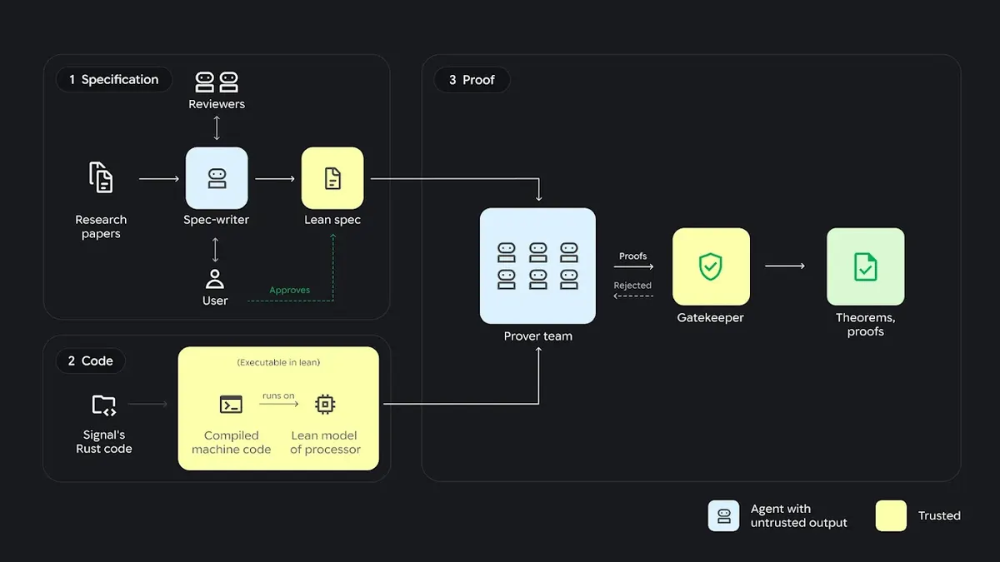

形式驗證：agent 六百萬行 Lean，把 Signal 加密證到程式碼
導讀原文：〈Introducing AlphaProof Code: a breakthrough in verifying complex software at depth〉——Google DeepMind 技術公告，含 Signal 技術長 Ehren Kret 評論
驗到設計層不算完，要一路驗到裝置上跑的那份編譯後程式碼——漏洞通常就藏在兩者之間的縫。
形式驗證是安全保證的最高標準：用數學證明程式沒有特定缺陷，勝過千次測試。
代價是人力。過去幾十年，專家的協定分析多半停在設計層，因為跨到實作層的複雜度是另一個量級。
這個落差有意義：漏洞常出現在設計與實作之間，而那段程式碼過去幾乎沒被數學證過。
Lean 是這裡的關鍵工具：它是一套程式語言兼證明助理，寫出來的證明會被機器逐行檢查。
換句話說，agent 不能「說服」任何人，只能交出 Lean 願意接受的證明。
「多 LLM」的意思是分階段用不同模型：規格階段混用多個模型討論，證明階段交給 Gemini Carbon。
AlphaProof Code 的做法像研究團隊分工：人與 AI 一起決定「要證什麼」，再由一群 agent 去證。

誰負責什麼：人的位置被縮到規格與抽查
第一步，研究員與多個模型合作，把 Signal 的安全目標翻成形式化規格，每一條都由人審過。
這一步是整件事的天花板：規格沒寫到的性質，後面證得再完美也證明不了。
第二步，Gemini Carbon 驅動的 agent 做證明；Lean 逐行檢查，擋掉「看起來對」的推導。
第三步，agent 自己審自己的證明，標出需要人再看的地方，只佔 1%——其餘由機器保證。
| 階段 | 誰做 | 產出 | 原文限定語 |
|---|---|---|---|
| 規格 | 人＋多個模型 | 形式化安全目標 | 每一條都經人類專家審查 |
| 證明 | Gemini Carbon agent | 600 萬行以上 Lean | Lean 自動檢查，非人眼 |
| 抽查 | agent 標記＋人 | 待複核清單 | 約 1% 程式碼 |
怎麼確認它真的會抓錯
DeepMind 在隔離副本裡放回兩個真實、先前已修掉的 bug，測試系統能不能分辨。
兩次都產出機器可檢的證明：該版本不安全。這是「驗證器沒有只會說好」的證據。
驗的範圍也值得記：訊息在裝置暫時被攻破前後都保持受保護，這類性質要在實作層才驗得出來。
四週完成，對照的是「歷史上需專家團隊多年」這個背景，而非某個基準執行。
Signal 技術長 Ehren Kret 的說法是：過去的形式驗證只能覆蓋較小部分，這次的做法能顯著擴大範圍。
對實務的意義不是「AI 會寫證明」，而是「驗證成本降到有機會排進產品時程」。
代價是流程要重配：規格得寫得更正式，團隊也要有能力讀懂 agent 標出的那 1%。
六百萬行的量級也說明一件事：這種規模的證明不可能靠人複核，Lean 的角色無法替代。
（編輯觀點：真正的門檻不是生成證明，是「規格寫對」——那一步仍由人負責，也仍可能出錯。）
帶走三件事
驗到程式碼才算驗完。設計層與實作層之間的縫，正是漏洞的住處。
可信的裁判比聰明的 agent 重要。Lean 不收的證明，一律不算數。
人的工作變少但沒消失。規格與 1% 抽查，仍是成敗關鍵。
導讀為本站編輯內容（AI 摘解自原文與館藏重點，非官方文件）；工時與比例為 Google DeepMind 自報，未附第三方複核報告。內容經對照原文的獨立事實審查後發布。